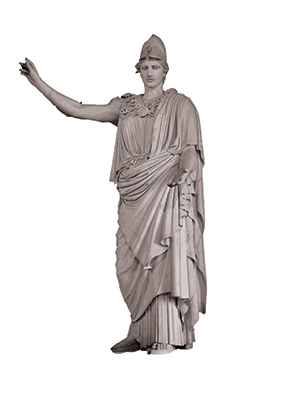
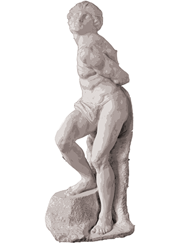
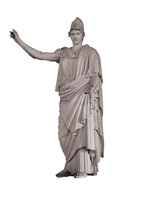
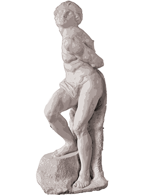
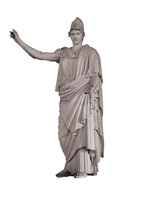
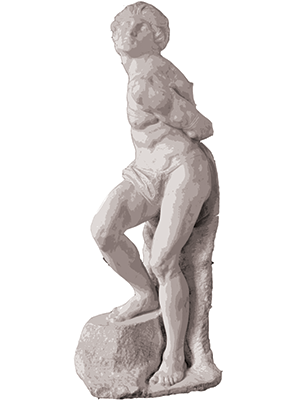
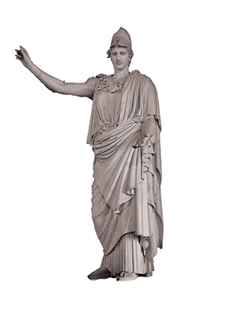
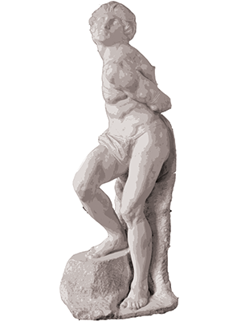

This unnamed piece is an example of ancient sculpture, likely from the Greek or Roman period. It’s carved in marble and has a lot of fine details, showing off the artist's skill. The figure itself isn’t clearly identified, so we don’t know who or what it’s supposed to represent.
Winged Victory of Samothrace: is a famous ancient Greek statue of Nike, the goddess of victory. It was created around 190 BCE and was found on the island of Samothrace. The statue shows Nike, the goddess of victory, with large, detailed wings spread wide, as if she just landed on a ship. The sculpture was orginially meant to celebrate a naval victory and was originally placed on a ship's helm.
Las Pallas de Velletri: is an ancient Roman copy of a lost Greek statue of Athena, the goddess of wisdom. The statue was discovered near Velletri, Italy and it is a reproduction of older Greek statue. Athena is shown standing tall, wearing a flowing robe and a helmet. Even though the original Greek version is lost, this Roman copy helps us understand the portrayal of Greek Art.
The Rebellious Slave: depicts a young man struggling against his restraints. It was a marble sculpture created by Michelangelo around 1513-1516 as part of a series for the pope at the time. Michelangelo didn’t finish the sculpture, leaving parts of it rough; This may show how the figure was still “trapped” in the marble.
Sarcophagus depicting the Labor of Herakles: is a Roman marble sarcophagus. It shows scenes from the Twelve Labors of Herakles, a series of tasks the Greek hero. Some of the labors include him fighting the Nemean Lion, capturing the Golden Hind, and cleaning the Augean stables. This sarcophagus was likely created for a wealthy Roman individual